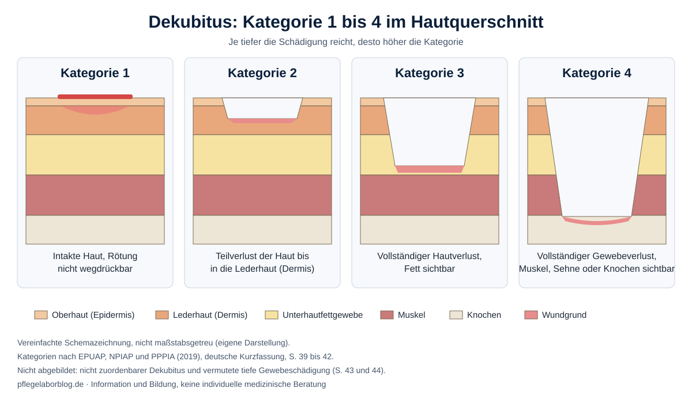
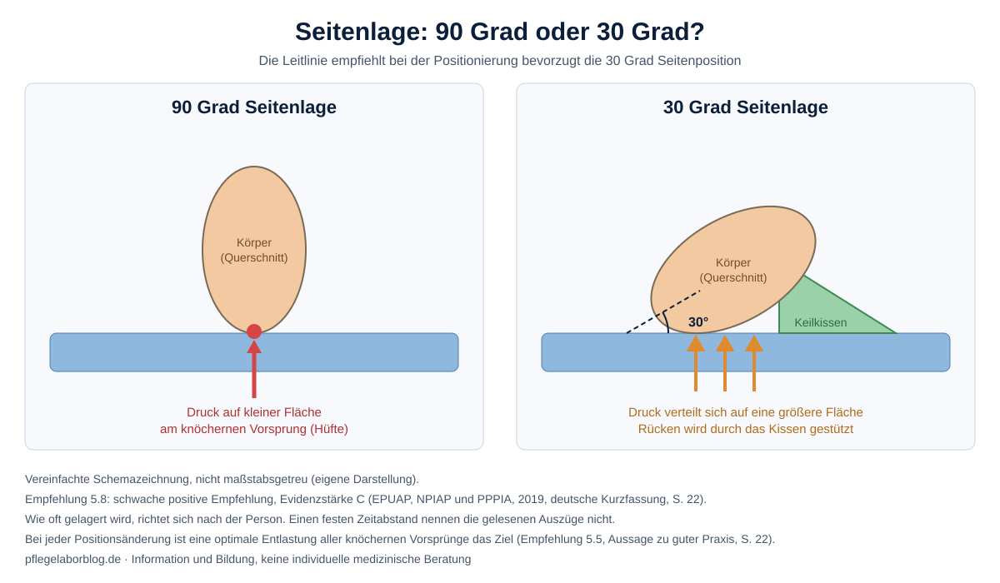

Ein Dekubitus ist eine Wunde, die durch Druck entsteht. Im Alltag sagt man Wundliegen oder Druckgeschwür. Das Deutsche Netzwerk für Qualitätsentwicklung in der Pflege (DNQP) nennt die Vorbeugung eine Kernaufgabe der Pflege [1, S. 11].
Dieser Beitrag beantwortet drei Fragen. Wie entsteht ein Dekubitus? Woran erkennen wir ihn? Und was empfehlen Expertenstandard und Leitlinie, damit er gar nicht erst entsteht? Er richtet sich an Auszubildende, Pflegende und pflegende Angehörige.
Was ein Dekubitus ist
Das DNQP beschreibt ihn als örtlich begrenzte Schädigung der Haut und/oder des Gewebes darunter. Sie liegt typischerweise über knöchernen Vorsprüngen und entsteht durch Druck oder durch Druck zusammen mit Scherkräften [1, S. 11]. Scherkräfte, also Kräfte, bei denen sich Gewebeschichten gegeneinander verschieben, kennen wir vom Herunterrutschen im Bett. Knöcherne Vorsprünge sind zum Beispiel das Kreuzbein (Sakrum), der Trochanter (der seitliche Knochenvorsprung an der Hüfte) und die Fersen [2, S. 25].
Der Expertenstandard gilt für Menschen jeder Altersgruppe mit erhöhtem Risiko. Bei Kindern sind Geräte und Zuleitungen, die von außen auf die Haut drücken, das größte Risiko [1, S. 11].
Die Kategorien 1 bis 4
Die internationale Leitlinie teilt nach der Tiefe der Schädigung ein. Je höher die Kategorie, desto mehr Gewebe fehlt [2, S. 39 bis 44].

| Kategorie | Was wir sehen | Seite |
|---|---|---|
| 1 | Intakte Haut mit einer Rötung, die sich nicht wegdrücken lässt | S. 39 |
| 2 | Teilverlust der Haut bis in die Lederhaut (Dermis), auch eine Blase ist möglich | S. 40 |
| 3 | Vollständiger Hautverlust, Fett kann sichtbar sein, Muskel und Knochen liegen nicht frei | S. 41 |
| 4 | Vollständiger Gewebeverlust, Muskel, Sehne oder Knochen sind sichtbar | S. 42 |
Dazu kommen zwei Sonderfälle. Beim nicht zuordenbaren Dekubitus verdecken Beläge oder Schorf den Wundgrund, die Tiefe ist unbekannt [2, S. 43]. Bei der vermuteten tiefen Gewebeschädigung ist die Haut tief rot, kastanienbraun oder violett verfärbt, die Schädigung sitzt darunter [2, S. 44]. Feuchtigkeitsbedingte Hautschäden, Hautrisse und Schäden durch Verband oder Pflaster gehören nicht in Kategorie 2 [2, S. 40].
Wer gefährdet ist
Die Leitlinie nennt viele Risikofaktoren. Die Evidenz (Studienlage) reicht von A, der stärksten, bis C. Die Empfehlungsstärke gibt an, wie sicher man sein kann, dass die Maßnahme mehr nützt als schadet [2, S. 6]. Die folgende Tabelle zeigt eine Auswahl.
| Risikofaktor | Evidenz | Empfehlung | Seite |
|---|---|---|---|
| Eingeschränkte Mobilität und Aktivität, Reibung und Scherkräfte | A | stark positiv | S. 16 |
| Diabetes mellitus | A | stark positiv | S. 16 |
| Bereits vorhandene Kategorie 1 | A | stark positiv | S. 16 |
| Durchblutungsstörungen | B1 | schwach positiv | S. 16 |
| Erhöhte Körpertemperatur | B1 | schwach positiv | S. 17 |
| Schlechter Ernährungszustand, feuchte Haut, höheres Alter, gestörte Wahrnehmung | C | schwach positiv | S. 16 und 17 |
Heißt das, wer ein Kästchen ankreuzt, bekommt einen Dekubitus? Nein. Die Leitlinie verlangt einen strukturierten Ansatz mit umfassender Hautbeurteilung. Ein Risikoinstrument ergänzt das Urteil der Pflegefachkraft, ersetzt es aber nicht [2, S. 18]. Der Expertenstandard fordert ein erstes Screening zu Beginn des Auftrags. Wenn eine Gefährdung nicht ausgeschlossen ist, folgt eine genauere Beurteilung. Wiederholt wird sie in individuellen Abständen und sofort bei veränderter Mobilität oder neuen äußeren Einflüssen [1, S. 13].
Was wir beobachten
Wir untersuchen die Haut bei gefährdeten Menschen auf Rötungen (starke Empfehlung, Evidenz A). Mit der Fingerdruckmethode prüfen wir, ob die Rötung wegdrückbar ist. Wir drücken kurz auf die Stelle. Bleibt sie rot, ist sie nicht wegdrückbar, und das ist ein Warnzeichen (starke Empfehlung, Evidenz B1) [2, S. 18]. Bei dunkel pigmentierter Haut empfiehlt die Leitlinie, zusätzlich Hauttemperatur und Feuchtigkeit im Gewebe zu beurteilen (schwache Empfehlung, Evidenz B2) [2, S. 19]. Auch Haut unter Geräten und Zuleitungen gehört zur Kontrolle [2, S. 27].
Was wir tun: Prävention
Bewegung und Lagerung
Der Expertenstandard fördert die Eigenbewegung so weit wie möglich. Reicht sie nicht, gibt es einen individuellen Bewegungsplan mit sofortiger Druckentlastung und vollständiger Entlastung gefährdeter Stellen (Freilage) [1, S. 13]. Die Leitlinie empfiehlt Positionswechsel nach individuellem Zeitplan (starke Empfehlung, Evidenz B1). Die Häufigkeit richtet sich nach Eigenaktivität und Mobilität [2, S. 21]. Einen festen Zeitabstand nennen die beiden Quellen nicht, die gelesenen Auszüge enthalten keinen. Bei der Seitenlage bevorzugt die Leitlinie die 30 Grad Position gegenüber 90 Grad (schwache Empfehlung, Evidenz C) [2, S. 22].

Weitere Punkte zur Lagerung: Das Kopfteil des Bettes steht so flach wie möglich, und eine längere Bauchlage vermeiden wir, außer sie ist medizinisch nötig (jeweils keine spezielle Empfehlung, Evidenz B1) [2, S. 22]. Die Fersen lagern wir frei, sodass das Gewicht des Beins entlang der Wade verteilt wird (starke Empfehlung, Evidenz B1) [2, S. 23].
Hilfsmittel
Zusätzlich zur Entlastung setzen wir druckverteilende Hilfsmittel ein, wenn die Bewegungsförderung nicht ausreicht [1, S. 13]. Bei Risiko empfiehlt die Leitlinie eine reaktive Weichlagerungsmatratze statt einer einfachen Schaumstoffmatratze (schwache Empfehlung, Evidenz B1) [2, S. 24]. Für langes Sitzen im Rollstuhl gilt ein druckumverteilendes Kissen bei hohem Risiko (schwache Empfehlung, Evidenz B1) [2, S. 26]. Technik ersetzt aber nicht die Förderung der Eigenbewegung [1, S. 12].
Hautpflege
Die Haut halten wir sauber und angemessen feucht, reinigen sie direkt nach Inkontinenz, vermeiden alkalische Seifen und schützen sie vor zu viel Feuchtigkeit (starke Empfehlung, Evidenz B2) [2, S. 19]. Kräftiges Reiben bei gefährdeter Haut vermeiden wir (Aussage zu guter Praxis) [2, S. 19].
Ernährung
Ein Ernährungsscreening gehört zur Prävention (starke Empfehlung, Evidenz B1) [2, S. 19]. Für mangelernährte oder gefährdete Erwachsene mit bestehendem Dekubitus nennt die Leitlinie 30 bis 35 kcal pro kg Körpergewicht und Tag (schwache Empfehlung, B1) und 1,2 bis 1,5 g Protein pro kg Körpergewicht und Tag (starke Empfehlung, B1) [2, S. 20].
Wenn schon ein Dekubitus da ist
Heilt er trotz Wundversorgung, Druckumverteilung und Ernährung nicht innerhalb von zwei Wochen, empfiehlt die Leitlinie eine umfassende Neubeurteilung (starke Empfehlung, Evidenz B2) [2, S. 28]. Schmerzen werden umfassend eingeschätzt (starke Empfehlung, B1) [2, S. 28]. Stabilen, trockenen Schorf an der Ferse entfernen wir nicht, außer bei Verdacht auf Infektion (starke Empfehlung, B2) [2, S. 29]. Der Verband richtet sich nach Wunde und Person, etwa nach Tiefe, Exsudat (Wundflüssigkeit) und Schmerz [2, S. 32]. Bei fortgeschrittener Infektion oder Wunden, die sich konservativ nicht schließen, wird chirurgische Beratung empfohlen [2, S. 34].
Bedeutung für die Pflegepraxis
Der Expertenstandard beschreibt den eigenen Beitrag der Pflege. Die Versorgung läuft aber über Berufsgruppen und Sektoren hinweg, mit Angehörigen und Hilfskräften. Aufgaben an Pflegehilfskräfte können je nach Organisation delegiert werden [1, S. 12]. Das betrifft vor allem Prävention, Beobachtung, Beratung und Lagerung. Wer bei einer bestehenden Wunde über Therapie und Verbände entscheidet, hängt von Einrichtung und ärztlicher Anordnung ab. Das ist eine eigene Einordnung und steht nicht in den Quellen.
Evidenz und Grenzen
Viele Empfehlungen sind Aussagen zu guter Praxis. Das ist keine Studienlage, sondern die Einschätzung der Leitliniengruppe, etwa bei Screening, Hautpflege und der Entlastung aller Vorsprünge [2, S. 7]. Die 30 Grad Lagerung hat Evidenz C. Dahinter steht indirekte Evidenz oder eine unklare Studienlage [2, S. 6]. Sie ist eine schwache Empfehlung, kein Gesetz.
Der Expertenstandard sagt außerdem ehrlich, dass sich ein Dekubitus nicht bei allen verhindern lässt, etwa bei lebensbedrohlichen Zuständen oder in der letzten Lebensphase. Auch eine informierte Entscheidung der Person gegen Maßnahmen ist möglich. Risiko einschätzen, informieren und gemeinsam entscheiden bleibt trotzdem Aufgabe der Pflege [1, S. 12].
Zur Einordnung der Quellen: Eine aktuelle deutsche S3 Leitlinie der AWMF speziell zum Dekubitus habe ich nicht gefunden. Weitere Leitlinien habe ich nicht gelesen und deshalb nicht als Quelle verwendet.
Von der internationalen Leitlinie nutze ich die dritte Ausgabe von 2019 in deutscher Übersetzung. Seit 2025 gibt es eine vierte Ausgabe als Living Guideline im Internet, die ich nicht gelesen habe. Empfehlungen können sich geändert haben. Der Expertenstandard stammt von 2017.
Praxisbeispiel (fiktiv)
Frau M. (fiktive Person, 84 Jahre) liegt nach einem Sturz überwiegend im Bett. Bei der Körperpflege fällt dir am Kreuzbein eine Rötung auf. Du drückst mit dem Finger darauf, die Rötung bleibt. Die Haut ist intakt, also Kategorie 1. Das ist ein Warnzeichen, denn wer Kategorie 1 hat, ist gefährdet, Kategorie 2 oder höher zu entwickeln [2, S. 16]. Nun entlastest du die Stelle, überprüfst Risiko, Lagerungsplan und Hilfsmittel, schaust nach Hautpflege und Ernährung und gibst deine Beobachtung weiter. Je nach Einrichtung wird die Ärztin oder der Arzt informiert.
Zusammenfassung
Ein Dekubitus entsteht durch Druck, Scherkräfte oder beides, meist über knöchernen Vorsprüngen. Die Kategorien 1 bis 4 beschreiben, wie tief die Schädigung reicht. Prävention heißt Risiko einschätzen, Haut beobachten, Bewegung fördern, Druck entlasten und verteilen, Haut pflegen und Ernährung beachten. Vieles davon ist gut belegt, manches ist Expertenmeinung. Beides haben wir benannt.
Häufig gestellte Fragen
Woran erkenne ich, ob eine Rötung gefährlich ist?
Mit dem Fingerdruck. Bleibt die Rötung nach dem Druck bestehen, ist sie nicht wegdrückbar. Das ist das Merkmal der Kategorie 1 [2, S. 18 und 39].
Muss ich alle zwei Stunden lagern?
Einen festen Abstand nennen die beiden gelesenen Quellen nicht. Der Zeitplan ist individuell und richtet sich nach Eigenaktivität, Mobilität, Haut und Gesamtzustand [2, S. 21 und 22].
Hilft Einreiben oder Massieren?
Kräftiges Reiben bei gefährdeter Haut soll vermieden werden [2, S. 19]. Für Massage allgemein habe ich keine Stelle gelesen, deshalb bleibt die Frage hier offen.
Ist jeder Dekubitus vermeidbar?
Er lässt sich weitgehend verhindern, aber nicht bei allen Menschen und in allen Situationen [1, S. 12].
Quellenverzeichnis
- [1] Deutsches Netzwerk für Qualitätsentwicklung in der Pflege (Hrsg.). (2017). Expertenstandard Dekubitusprophylaxe in der Pflege: 2. Aktualisierung 2017 (Auszug). Hochschule Osnabrück. https://www.dnqp.de/fileadmin/HSOS/Homepages/DNQP/Dateien/Expertenstandards/Dekubitusprophylaxe_in_der_Pflege/Dekubitus_2Akt_Auszug.pdf (abgerufen am 11.10.2026). Seitenangaben nach dem Auszug.
- [2] European Pressure Ulcer Advisory Panel, National Pressure Injury Advisory Panel & Pan Pacific Pressure Injury Alliance. (2019). Prävention und Behandlung von Dekubitus: Kurzfassung der Leitlinie (E. Haesler, Hrsg.; 3. Aufl., deutsche Übersetzung). EPUAP/NPIAP/PPPIA. https://epuap.org/wp-content/uploads/sites/17/2023/10/QRG-2020-German.pdf (abgerufen am 11.10.2026)
Hinweis: Dieser Beitrag dient der fachlichen Information und Bildung. Er ersetzt keine individuelle medizinische Beratung und keine Anweisung der Pflegefachkraft oder der Ärztin oder des Arztes vor Ort.